UX Prototyping
lofi
Mick McQuaid
2025-02-11
Week FIVE
But first … Design systems
〈pause for design system video〉
Takeaways
- People use different terms
- People use the term design system in different ways, all the wayfrom style guide to component libraries to basis for entire company (e.g., AirBnB)
- GitHub posits rules, constraints, and principles
- example: color
- rule: pass color contrast ratio of 4:5:1
- constraint: number of colors in palette
- principle: color used in a meaningful way
Takeaways, continued
- GitHub started with color, typography, spacing, components, layouts
- GitHub added interaction models, voice and tone, words, grammar and mechanics
- GitHub uses https://primer.style/
- GitHub uses BEM-style notation https://en.bem.info/
- Material Design is aspirational for GitHub
Other examples
- IBM Design Language
- IBM Carbon Design System
- Atlassian Design System
- Firefox (obsolete but not yet replaced)
- Salesforce (the original use of the term)
AirBnB hired Pixar to create their storyboards to reflect AirBnB’s values as part of their value-based design system
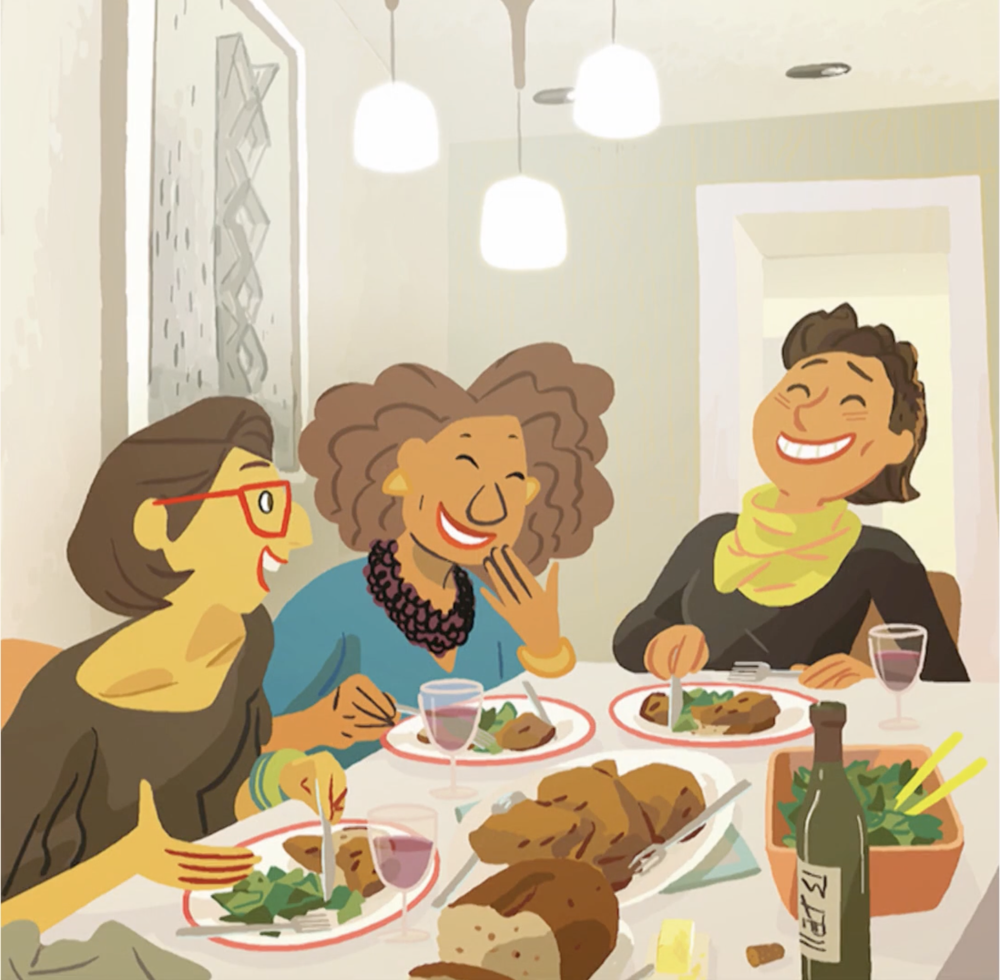
AirBnB storyboard
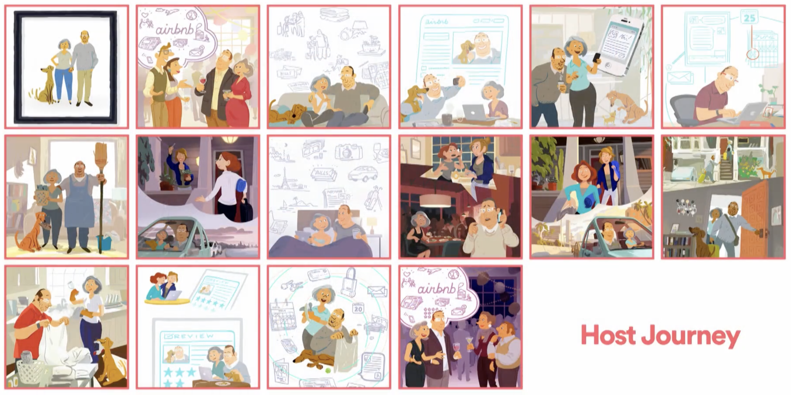
But first … Animation
Animation Storyboards
- Val Head video https://youtu.be/Itsg48crOjM
- Val Head interview
- Trigger
- Action
- Quality
Animation Storyboards
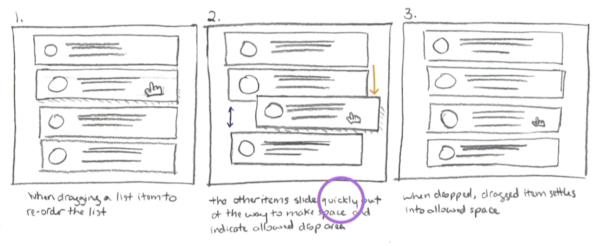
Animation Storyboard User Input Symbols
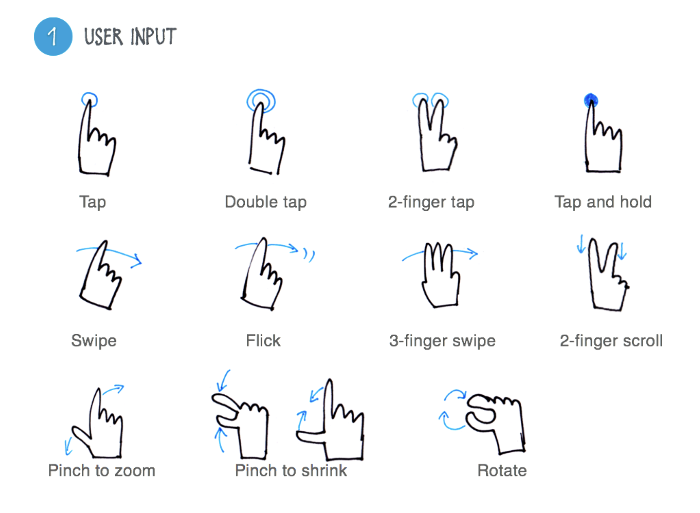
Animation Storyboard Action Symbols
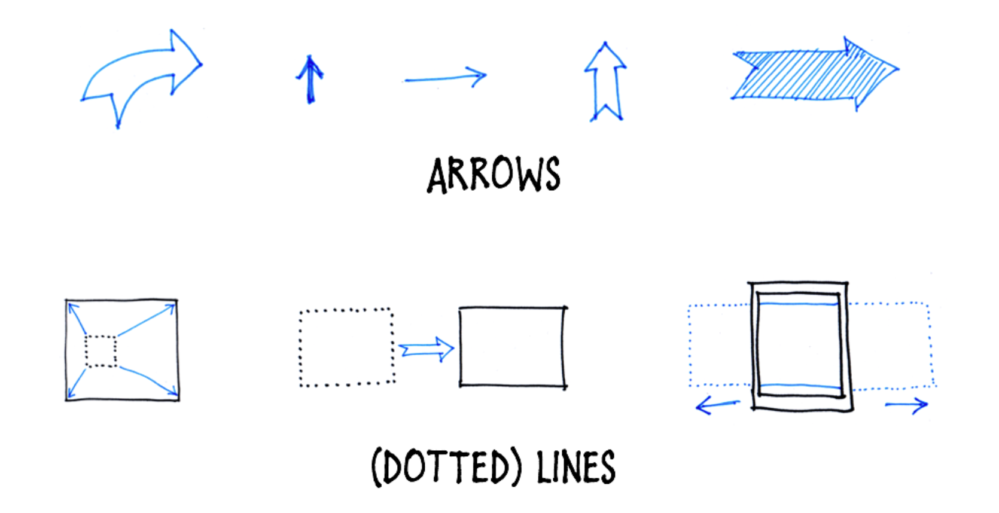
Animation Storyboard Quality Symbols
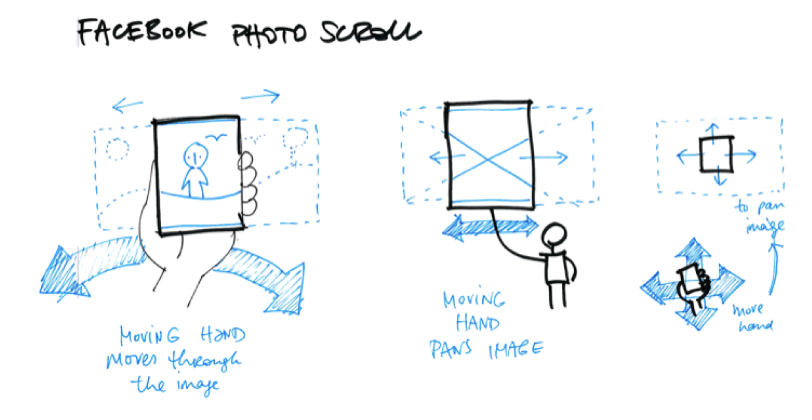
Animation Storyboard Example

Animation Motion Comps
- aka Animatics
- Video of how animation works
- Very high fidelity
Problem: Animate this!
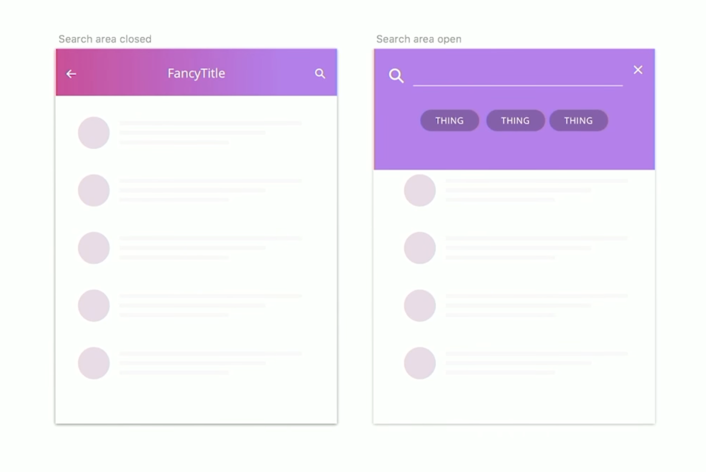
Animation: Interactive Prototypes
- Allows the user to experience the trigger and the effect
- Gives the feel of the timing, not just the look
- Establishes context (e.g., bouncy, playful bank app)
- Following is archived but still available:
- Intuit example https://designsystem.quickbooks.com (go to Foundations > Motion)
lofi
All you need is here
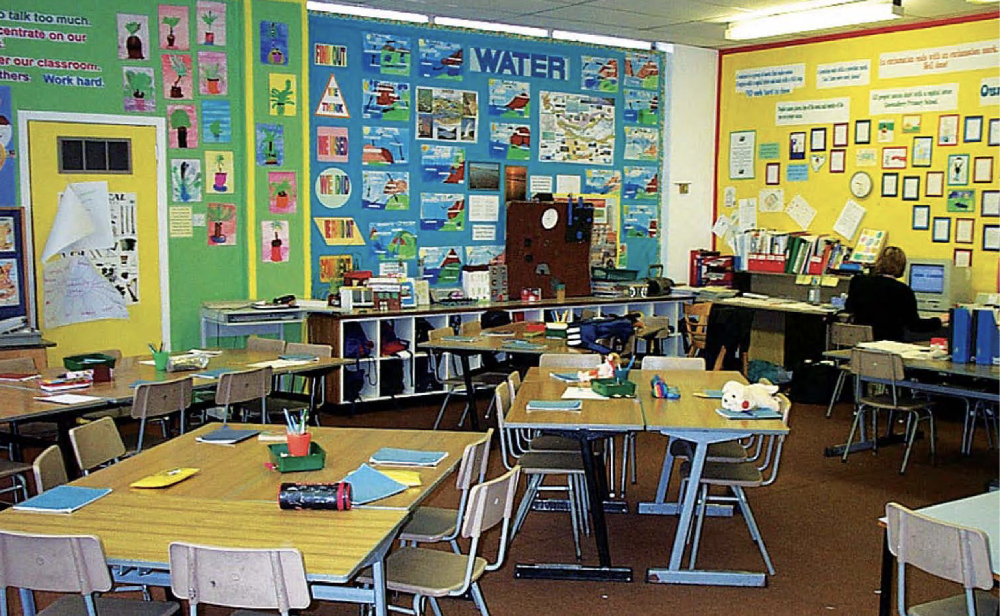
Ideation
Day one of this course
- We used a storyboard sheet to ideate
- But we could consider the interview and brainstorming the list of needs as part of the ideate process—they certainly lead up to it
- In fact, we can do anything that will help us come up with ideas!
- IDEO suggests a three step process: inspiration, ideation, implementation
- Under Ideate, they suggest many activities, including journey mapping, HMW, and rapid prototyping; we’ll examine HMW
HMW (how might we?)
〈pause for how might we video〉
IDEO Inspiration Examples
- https://www.designkit.org/methods.html
- Brainstorm
- Interview
- How Might We
The How Might We step
- Rephrase insight statements from previous step as questions by adding “How might we” at the beginning
- Look for design opportunities from these questions
- Make each question broad enough to allow a number of solutions, but narrow enough to be actionable
Diverging and Converging
The best way to have an idea is to have lots of ideas.
— Linus Pauling
Why diverge then converge
- You will not come up with a creative solution if you don’t diverge
- You will not meet the deadline if you don’t converge
- You must set a time limit for both processes
How to diverge and converge
- Ideate!
- Implement ideas!
A view from Becker (2020)

A way to converge from Becker (2020)
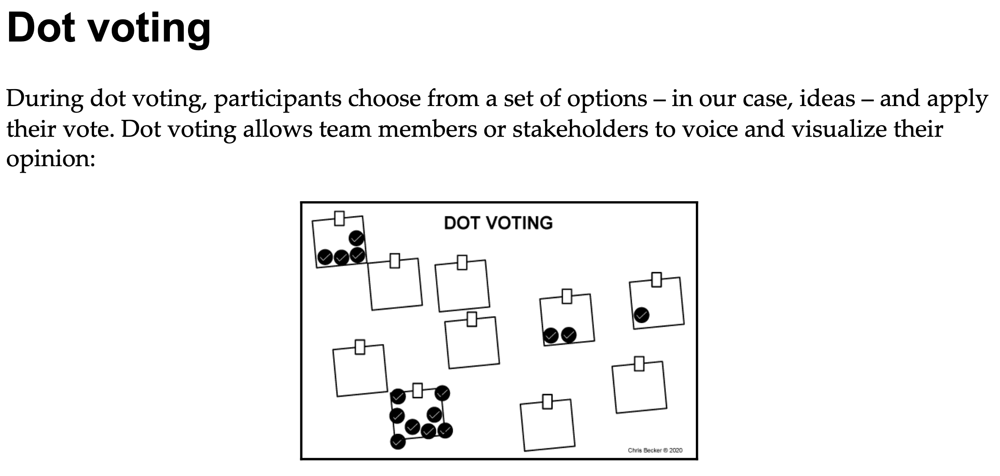
Prototyping Levels
lofi from Buxton (2007)
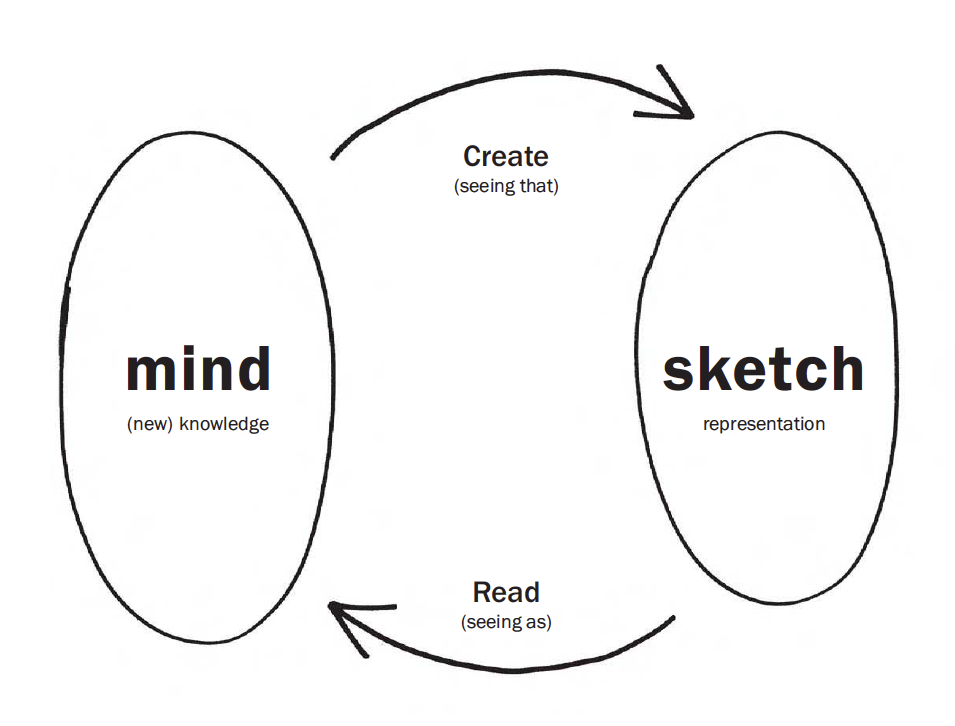
My drawings have been described as pre-intentionalist, meaning that they were finished before the ideas for them had occurred to me. I shall not argue the point.
— James Thurber
Sketching capabilities from Buxton (2007)
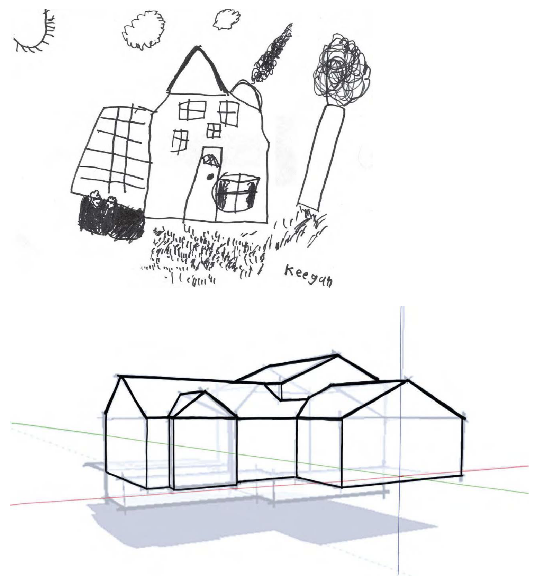
lofi and hifi from Buxton (2007)
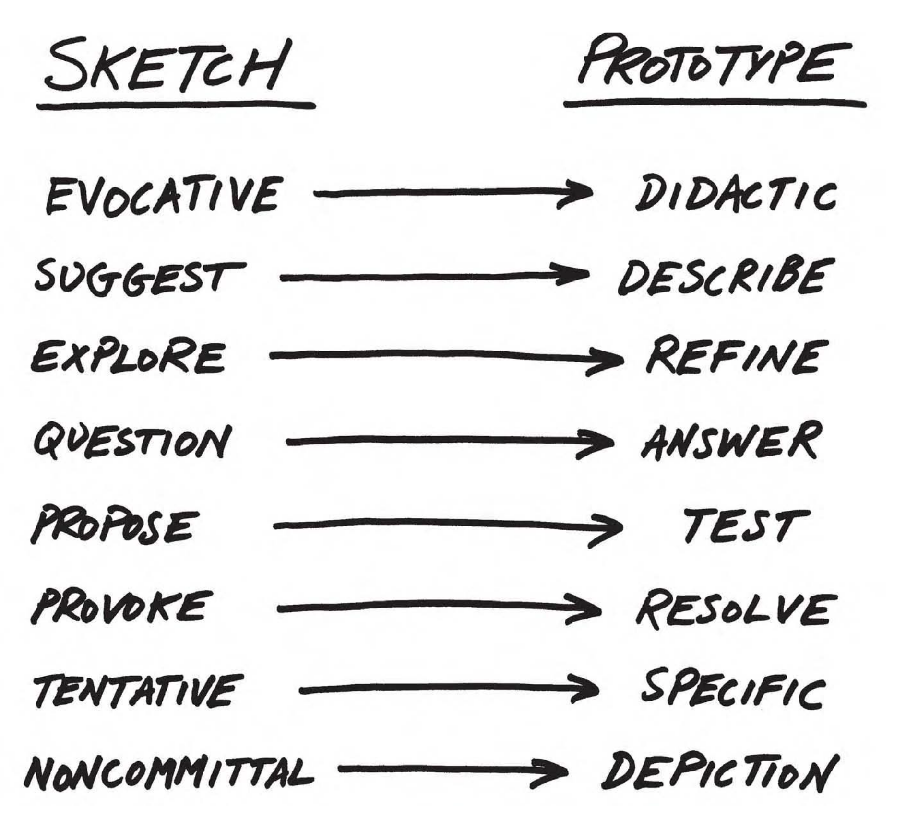
Buxton Collection
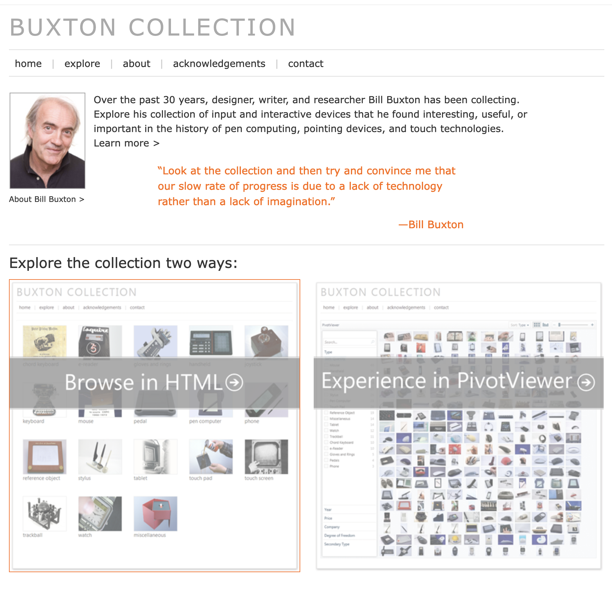
Sometimes less is more: Femme
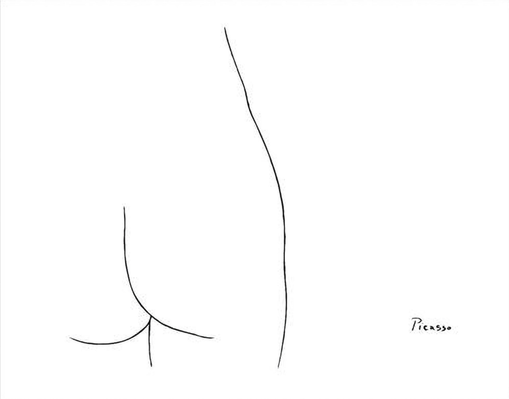
System diagramming
Becker (2020) view
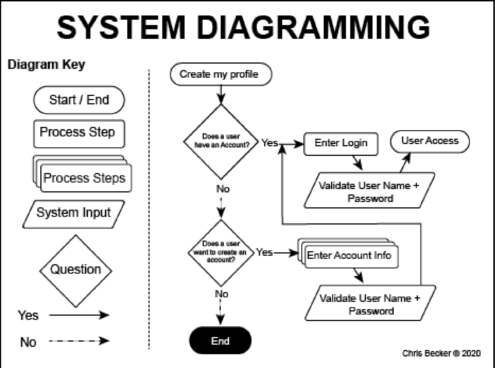
Issues with system diagramming
- By the way, it’s usually called flowcharting
- Goes in and out of fashion
- Main issue is that there is no standard symbol set
- Therefore any flowchart can mean anything
- Many developers are schooled in UML, may resist anything else
- UML has roughly nine very specific diagram types, standardized worldwide
Story about learning (time permitting)
- The time, the place, the people, and the skills
- aka The time, the place, and the people
- concerns Daud Sahil (sahil means guide or leader in Hindi)
References
Becker, Christopher Reid. 2020. Learn Human-Computer Interaction: Solve Human Problems and Focus on Rapid Prototyping and Validating Solutions Through User Testing. Packt Publishing.
Buxton, Bill. 2007. Sketching User Experiences: Getting the Design Right and the Right Design. San Francisco: Morgan Kaufman.
Goldschmidt, G. 1991. “The Dialectics of Sketching.” Creativity Research Journal 4 (2): 123–43.
END
Colophon
This slideshow was produced using quarto
Fonts are League Gothic and Lato